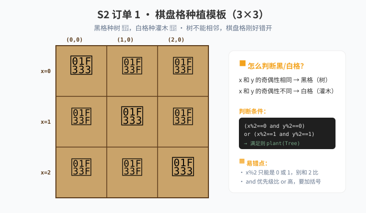

🎮 游戏进度 · 这一关解锁什么
📌 课前在游戏里做这些事
- 解锁 树（Tree）——但要花 5 木材（先解锁灌木）。
- 解锁 胡萝卜——需要先翻土（
till()把草变成Grounds.Soil）。 - 解锁 水（
Items.Water）——浇水能让作物 5 倍速生长。 - 试试看：直接
plant(Entities.Tree)会出现什么？树不能相邻种植。
📖 知识卡 · 5 张
① 算术运算符：+ - * / % // **
5 + 3 # 8
5 - 3 # 2
5 * 3 # 15
5 / 3 # 1.6666...（除法是浮点数！）
5 // 2 # 2（整除，向下取整）
5 % 2 # 1（取余，5 除以 2 余 1）
2 ** 10 # 1024（幂）% 取余是这一关最常用的——判断奇偶、棋盘格、轮作都靠它。/ 永远返回浮点数，要整数得用 //。
② 比较运算符：== != > < >= <=
比较返回 True 或 False。注意是 ==，不是 =。单个 = 是"赋值"。
5 == 3 # False
5 != 3 # True
5 > 3 # True
3 <= 3 # True（小于等于）③ 逻辑运算符：and / or / not
把多个条件组合起来。and 要求都对，or 一个对就够，not 反过来。
a = 10
if a > 5 and a < 20: # 同时满足
pass
if a < 0 or a > 100: # 满足一个就行
pass
if not can_harvest(): # 没熟
pass④ 优先级：拿不准就加括号
从高到低：括号 > 幂 > 乘除 > 加减 > 比较 > 逻辑。
2 + 3 * 4 # 14，先乘后加
(2 + 3) * 4 # 20，括号优先
# 在农场里这么写：if (x % 2 == 0) and (y % 2 == 0):⑤ get_water() 是 float，不是 int
这一关特别容易踩的坑：get_water() 返回 0.0 ~ 1.0 的小数（水分比例），不是 0~100 的整数。
get_water() # 比如 0.75（75% 水分）
num_items(Items.Hay) # 整数，比如 250想判断"水够不够"写 get_water() < 0.75，别写成 get_water() < 75。
🚜 农场订单 · 闯关任务
订单 1
棋盘格：树 + 灌木
📋 客户要求
在 3×3 田里"黑格"种树、"白格"种灌木。树不能相邻，所以必须是棋盘格图案（(0,0) 树、(0,1) 灌木、(0,2) 树）。

(x + y) % 2 == 0，或分别取余后用 and/or。
必须用 %（取余）
必须用 and / or
不能写 3 个 if 判断 x
判断"是不是黑格"，只看好格的行号加列号之和的奇偶性。奇偶相同是黑格（树），奇偶不同是白格（灌木）。
起步骨架（点开前先自己想）
从这段改起
while True:
x = get_pos_x()
y = get_pos_y()
if can_harvest():
harvest()
# 判断"是不是黑格"：x 和 y 的奇偶性相同
if (__________):
plant(__________)
else:
plant(__________)
move(East)
if get_pos_x() == 0:
move(North)
订单 2
智能浇水：缺水才浇、没水不浇
📋 客户要求
在订单 1 的棋盘格田上继续。每一格：先收 → 再种 → 缺水才浇。缺水（
get_water() < 0.5）且水库存够（num_items(Items.Water) >= 1）才调 use_item(Items.Water)。水不够或水分已经够都不浇。
必须用 and
必须用 < / >=
必须用 num_items(Items.Water)
必须用 get_water()
把"判断条件"先写在纸上：什么情况下才浇水？两个条件都满足才浇——这叫"复合条件"，是这一关的关键。
🔧 常见报错 · 卡住了先看这里
树和树挤在一起，长不大 → 棋盘格条件错了。x % 2 == 0 and y % 2 == 0 是黑格，x % 2 == 1 and y % 2 == 1 也是黑格——这两种情况都得种树。
胡萝卜种下去直接死了 → 没翻土，胡萝卜需要 Grounds.Soil，不能直接种在草地上。
游戏报错 NameError: Water → 新版本里可能没有 Items.Water，或者名字变了，去游戏内文档查。
if 永远为真 / 永远为假 → 拿浮点数和整数比。比如 get_water() < 75 永远为真（因为 0.0~1.0 永远小于 75），要写 0.75。
🚪 自查门
✓ 5 个知识点 · 真的会了才勾